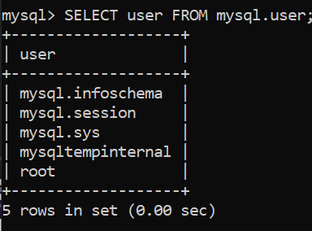

Module 106 - Interroger, traiter et assurer la maintenance des bases de données
Grégory Charmier
Les jointures
Les 2 tables : FILM et REALISATEUR
Travailler avec plusieurs tables - Approche intuitive
Nous savons qui a réalisé un film spécifique car il existe une colonne fkRealisateur dans la table film
Travailler avec plusieurs tables - Approche intuitive
- Si vous regardez ‘Minuit à Paris’, sa valeur idRealisateur est 3
- Nous pouvons donc consulter la table realisateur pour découvrir que l’identifiant 3 est attribué à Woody Allen
- Et c’est ainsi que nous savons qu’il est le réalisateur
Travailler avec plusieurs tables - Approche intuitive
Comment afficher le contenu des 2 tables ?
Naturellement, à partir de nos connaissances actuelles, nous ferions :
Le résultat, cependant, pourrait vous surprendre un tout petit peu. Vérifions-le.
Plusieurs tables dans la clause FROM
Comme il y a 8 films et 5 réalisateurs, combien de lignes obtiendrons-nous dans notre résultat ? A votre Avis ?
Plusieurs tables dans la clause FROM
Remarque : Ceci est le résultat partiel de la requête
Plusieurs tables dans la clause FROM
- Nous avons 40 lignes en tout, car le SQL prend chaque film et le lie à tous les réalisateurs possibles.
- Nous avons donc maintenant 8 * 5 = 40 lignes !
- En mathématiques, c’est le produit cartésien
Plusieurs tables dans la clause FROM
- Pourquoi cela s’est-il produit ?
- Le SQL ne sait pas quoi faire avec les résultats des deux tables, donc il vous a donné toutes les combinaisons possibles !
Jointure
Jointure
Le résultat est plus clair maintenant !
Relier des tables à l’aide de JOIN
Relier des tables à l’aide de JOIN
Utilisez le mot clé JOIN … ON pour lier les lignes des tables film et realisateur de manière à ce qu’un film soit présenté avec son réalisateur
Relier des tables à l’aide de JOIN
Le résultat est exactement identique !
Afficher des colonnes spécifiques
Sélectionnez le nom du réalisateur et le titre du film dans les tables film et realisateur de manière à ce qu’un film soit affiché avec son réalisateur
Afficher des colonnes spécifiques
Faire référence à des colonnes sans nom de table
- Sélectionnez le nom du réalisateur et le titre du film dans les tables film et realisateur de manière à ce qu’un film soit affiché avec son réalisateur
- N’écrivez pas les noms des tables dans la clause SELECT
Faire référence à des colonnes sans nom de table
Renommer des colonnes avec AS
Renommez la colonne filTitre en titre_du_film
Renommer des colonnes avec AS
Filtrer les tables reliées
- Sélectionnez toutes les colonnes des tables film et realisateur de manière à ce qu’un film soit affiché avec son réalisateur
- Sélectionnez uniquement les films réalisés après 2000
- Dans la condition de jointure, la première table est film et la seconde est realisateur
Filtrer les tables reliées
Filtrer les tables reliées - suite
- Sélectionnez toutes les colonnes des tables film et realisateur de manière à ce qu’un film soit affiché avec son réalisateur
- Sélectionnez uniquement les films qui ont été réalisés par Steven Spielberg
Filtrer les tables reliées - suite
Mettez vos compétences en pratique
- Sélectionnez les colonnes titre et annee_production de la table film, et les colonnes nom et annee_naissance de la table realisateur de manière à afficher un film et son réalisateur
- Renommez la colonne annee_naissance en né_en
- Sélectionnez uniquement les films qui ont été tournés lorsque leur réalisateur avait moins de 40 ans (la différence entre annee_production et annee_naissance doit être inférieure à 40)
Mettez vos compétences en pratique
Entraînement complémentaire
- Sélectionnez les colonnes id, titre et annee_production de la table film et les colonnes nom et annee_naissance de la table realisateur de manière à afficher un film et son réalisateur
- Renommez la colonne annee_naissance en né_en et la colonne annee_production en produit_en
- Sélectionnez uniquement les films dont le titre contient la lettre ‘a’ et qui ont été tournés après 2000, ou dont le réalisateur est né entre 1945 et 1995
Entraînement complémentaire
Source
Gestion des utilisateurs
Notion d’utilisateur
- MySQL est un serveur et pour se connecter à ce serveur, on a besoin d’un utilisateur !
- Un utilisateur s’identifie lors de la connexion à la base de données
Notion d’utilisateur
Par défaut, avec MySQL, on utilise le user root
Voir la liste des utilisateurs
Pour voir la liste des utilisateurs, il faut commencer par se connecter à la DB :
Voir la liste des utilisateurs
Ensuite, afficher la liste des bases de données :
Voir la liste des utilisateurs
Pour la base de données mysql, afficher les différentes tables.
nous permet de voir l’existence d’une table user
Voir la liste des utilisateurs
Pour la table user, afficher les différents champs.
nous permet de voir l’existence d’un attribut (ou champ ou colonne) user
Voir la liste des utilisateurs
Ok maintenant, on sait qu’il existe un attribut (ou champ ou colonne) user dans la table user de la base de données mysql !

Voir l’utilisateur courant = connecté
Créer un utilisateur
L’utilisateur possède 3 informations principales :
- Son nom
- Le host depuis lequel il a le droit de se connecter
- Son mot de passe
Créer un utilisateur
Supprimer un utilisateur

Question ?
Pourquoi devons nous utiliser les ’’ dans les commandes précédentes ?
Réponse
Pour entourer (wrapper) la chaine de caractères qui pourait contenir des caractères spéciaux.
Notion de privilèges
Chaque utilisateur possède des privilèges, c’est-à-dire des droits relatifs aux données de la base :
- Sélection des données
- Modification des données
- Création des objets
- Etc…
et cela sur certaines bases de données ou certaines tables
Privilèges par défaut
Un utilisateur créée ne peut rien faire
Voir les privilèges
Par défaut, un utilisateur ne possède que le niveau de privilège USAGE qui correspond à “aucun privilège”
Accorder des privilèges
La commande GRANT
GRANT permet de donner des droits !
La commande GRANT
Nous souhaitons donner le droit de créer des tables, des bases de données à l’utilisateur greg
Vérification
Vérifions que l’utilisateur greg peut créer, par exemple, une base de données :
La commande GRANT
- Cette commande donne tous les privilèges à l’utilisateur “greg” à l’exception de GRANT OPTION
- Cela signifie que l’utilisateur “greg” ne pourra pas donner des privilèges à d’autres utilisateurs
La commande GRANT
Cette commande donne tous les privilèges à l’utilisateur “greg” y compris le privilège GRANT
La commande FLUSH PRIVILEGES
Cette commande demande au serveur MySQL de recharger l’ensemble des privilèges
La commande FLUSH PRIVILEGES
En utilisant la commande GRANT vous n’avez pas besoin de la commande FLUSH PRIVILEGES car MySQL est notifié des changements et va recharger les tables GRANT immédiatement
La commande FLUSH PRIVILEGES
Par contre, vous avez besoin de cette commande :
- si vous modifiez les privilèges à l’aide de INSERT, UPDATE, DELETE (non recommandé)
- avec d’ancienne version de MySQL
- avec d’autres SGBDR comme MariaDB
Retirer des privilèges
- Il faut changer GRANT par REVOKE
- Et TO par FROM
Les privilèges
Les différents niveaux d’application des privilèges
Exemple 1
Exemple 1
L’utilisateur paul aura le privilège SELECT sur la table countries de la base de données nation
Exemple 2
Exemple 2
L’utilisateur paul aura tous privilèges (sauf GRANT) sur la base de données db_movies
Gestion des rôles
Notion de rôle
Un rôle permet de déterminer le “profil” d’un groupe de personnes à qui l’on souhaite attribuer des privilèges
Ex: développeur, administrateur, consultant, etc
Notion de rôle
Tout comme les privilèges, les rôles permettent de restreindre ou d’augmenter l’accès à certains objets de nos bases de données à nos utilisateurs
En fait, un ROLE est un ensemble de privilèges qui peut être attribué à plusieurs utilisateurs de façon simultanée
Cela permet de gérer les privilèges de vos utilisateurs de façon plus simple et rapide
Créer un rôle
Définir les privilèges de ce rôle
Donner le rôle consultant à des utilisateurs
Les utilisateurs doivent exister !